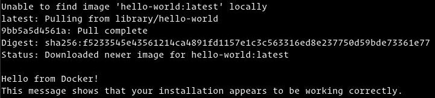

如何在 Raspberry Pi 上安装和使用 Docker
Docker 是一个容器化平台，允许您快速构建，测试和部署应用程序，作为便携式，自给自足的容器，几乎可以在任何地方运行。
在本教程中，我们将解释如何在 Raspberry Pi 上安装 Docker 并探索基本的 Docker 概念和命令。
先决条件
我们假设您在 Raspberry Pi 上安装了 Raspbian 。 Docker 不需要图形界面，最好是使用 Raspbian Stretch Lite 镜像并启用SSH 。这样， Raspberry Pi 将具有更多可用的处理能力和内存来运行 Docker 容器。
在 Raspberry Pi 上安装 Docker
在 Raspberry Pi 上安装 Docker 只需要运行一些命令。
首先，使用以下 curl 命令下载 Docker 安装脚本：
curl -fsSL https://get.docker.com -o get-docker.sh
下载完成后，键入以下命令执行脚本：
sh get-docker.sh
该脚本将检测 Linux 发行版，安装所需的包，并启动 Docker 。
该过程可能需要几分钟，完成后脚本将输出有关 Docker 版本以及如何将 Docker 用作非 root 用户的信息。
完成后，Docker 就安装在 Pi 板上了。
在没有 Sudo 的情况下执行 Docker 命令
默认情况下，只有具有管理权限的用户才能执行 Docker 命令。
要以非 root 用户身份运行 Docker 命令而不需要预先添加 sudo ，您需要将用户添加到安装期间创建的 docker 组。要按类型执行此操作：
sudo usermod -aG docker $USER
$USER 是一个保存用户名的环境变量。
注销并重新登录，以便刷新组成员身份。
要验证您是否可以不使用 sudo 而直接运行 docker 命令请运行下载测试镜像的命令，请在容器中运行它，打印 “Hello from Docker” 消息并退出：
docker container run hello-world
输出看起来像这样：

如何使用 Docker
现在 Docker 已经在你的 Raspberry Pi 上安装和设置好了，让我们来看看基本的 docker 概念和命令。
Docker 镜像
Docker 镜像由一系列文件系统层组成，这些文件系统层表示构成可执行软件应用程序的镜像的 Dockerfile 中的指令。镜像是一个不可变的二进制文件，包括应用程序和运行应用程序所需的所有其他依赖项，如库，二进制文件和指令。
Docker Hub 上提供了大多数 Docker 镜像。它是一个基于云的注册服务，其中包括其他功能，用于将 Docker 镜像保存在公共或私有存储库中。
要从 Docker Hub 注册表中搜索镜像，请使用该 docker search 命令。例如，要搜索 Debian 镜像，您可以键入：
docker search debian
Docker 容器
镜像的实例称为容器。容器表示单个应用程序，进程或服务的运行时。
它可能不是最合适的类比，但如果您是程序员，您可以将 Docker 镜像视为类，将 Docker 容器视为类的实例。
要启动，停止，删除和管理容器，请使用该 docker container 命令。例如，以下命令将基于 Debian 镜像启动 Docker 容器。如果您没有本地镜像，将首先下载它：
docker container run debian
Debian 容器将在启动后立即停止，因为它没有长时间运行的进程，也没有提供其他命令。容器启动，运行一个空命令，然后退出。
该选项 -it 允许您通过命令行与容器进行交互。要启动交互式容器类型：
docker container run -it debian /bin/bash
root@ee86c8c81b3b:/#
正如您在容器启动时从上面的输出中看到的那样，命令提示符已更改，这意味着您现在正在从容器内部工作：
要列出活动的 Docker 容器，请使用以下命令：
docker container ls
如果您没有任何正在运行的容器，则输出将为空。
要查看活动和非活动的所有容器，请使用 -a 选项：
docker container ls -a
要删除一个或多个容器，只需复制容器 ID 并在 container rm 命令后粘贴它们：
docker container rm c55680af670c
结论
您已经学习了如何在 Raspberry Pi 机器上安装 Docker 以及如何运行 Docker 容器。有关此主题的更多信息，请查看 Docker 官方文档。